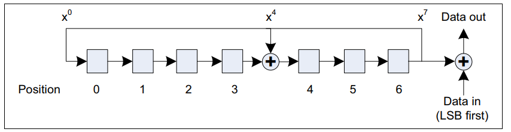
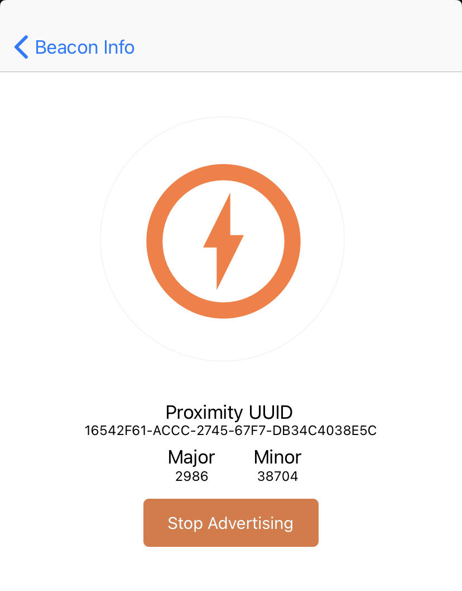
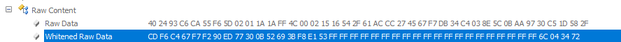

SDK 8.3.0 为 ING916 引入了一项新的“非标”功能：将传统广播里一部分数据视为 CTE 并得到 IQ 采样。 借助此功能，可以将现有的海量 BLE 4.2 设备作为 AoA 发送端，寻向、定位。
本文以一个“非典型”的 BLE 设备 iPhone XR 为例，通过传统广播发送“假冒” CTE 信号，并通过 ING916 获得 IQ 采样。
发送“假冒” CTE 信号
“假冒” CTE 信号指的是空口上一段足够长的全 1 信号。由于蓝牙广播数据在发送到空口前会经过白化处理， 需要保证白化之后的数据全为 1。所谓白化是利用 LSFR 生成一伪随机扰码，将原始数据的各比特与扰码异或：

由于 $(A \oplus B) \oplus B = A \oplus (B \oplus B) = A \oplus 0 = A$， 所以要想在空中发送比特 A，可以先对其做一次白化处理。
另一个需要解决的问题如何在 iPhone 上发送内容完全可控的 20 字节，空口长度 $160 \mu s$。iBeacon 恰好符合： 16 个字节的 UUID，外加 Major、Minor 各 2 个字节。有关 iBeacon 的更多信息，可参考 “蓝牙开发零门槛之二：iBeacon”。
使用 Locate app 发送 UUID 等全为 0 的 iBeacon 信号，用 UART GATT Console 扫描其数据：
ADV xx:xx:xx:xx:xx:xx (RANDOM) -58dBm
Type: 0x13
0 1 2 3 4 5 6 7 8 9 10 11 12 13 14 15
===============================================
02 01 1A 1A FF 4C 00 02 15 00 00 00 00 00 00 00 | .....L..........
00 00 00 00 00 00 00 00 00 00 00 00 00 C5 | ..............
可知，整个广播数据只包含 Flags 和 iBeacon，UUID 从第 9 个字节开始。这个字节对应与白化序列的 第 $(2 + 6 + 9) = 17$ 个字节，这里的 2 为广播 PDU 里 Header 的长度，6 为 AdvA 的长度。 以 37 信道为例，其白化序列从第 17 个字节开始的连续 160 个比特为：
{0xe9,0xab,0xd0,0x9e,0x53,0x33,0xd8,0xba,0x98,0x08,
0x24,0xcb,0x3b,0xfc,0x71,0xa3,0xf4,0x55,0x68,0xcf}
将其按比特取反就是要发送的原始数据：
{0x16,0x54,0x2f,0x61,0xac,0xcc,0x27,0x45,0x67,0xf7,
0xdb,0x34,0xc4,0x03,0x8e,0x5c,0x0b,0xaa,0x97,0x30}
将这组数据填入 iBeacon，然后发送：

使用 UART GATT Console 确认数据：
ADV xx:xx:xx:xx:xx:xx (RANDOM) -58dBm
Type: 0x13
0 1 2 3 4 5 6 7 8 9 10 11 12 13 14 15
===============================================
02 01 1A 1A FF 4C 00 02 15 16 54 2F 61 AC CC 27 | .....L....T/a..'
45 67 F7 DB 34 C4 03 8E 5C 0B AA 97 30 C5 | Eg..4...\...0.
利用空中抓包工具，可确认空口上确实是连续的全 1：

需要注意，传统广播在 37、38、39 等 3 个信道上发送，每个信道使用的白化序列不同，但我们无法为 3 个信道配置不同的 iBeacon 数据。这里所发送的 iBeacon 只在第 37 信道上假冒了 CTE 信号。
获得 IQ 采样
-
要从传统广播里采集 IQ 数据，必须配置为只接收传统广播
在协议栈初始化后，调用：
platform_config(PLATFORM_CFG_LL_DBG_FLAGS, LL_FLAG_LEGACY_ONLY_SCANNING); -
锁定扫描信道
由于只在 37 信道上假冒了 CTE 信号，扫描时也锁定该信道：
ll_scan_set_fixed_channel(37); -
开始扫描
扫描的配置无特殊之处。为了方便测试，可以把 iPhone 的地址加入白名单。
-
开始采样
扫描启动后，就可以通过
ll_scanner_enable_iq_sampling_on_legacy开始采样。 这个函数与ll_scanner_enable_iq_sampling相比，增加了 2 个参数：sampling_offset和cte_time。int ll_scanner_enable_iq_sampling_on_legacy( uint16_t sampling_offset, uint8_t cte_type, uint8_t cte_time, uint8_t slot_len, uint8_t switching_pattern_len, const uint8_t *switching_pattern, uint8_t slot_sampling_offset, uint8_t slot_sample_count);不从广播数据中获取 CTEInfo，采样的起点和持续时间都从外部指定。
sampling_offset表示从哪个比特开始采样，第 0 比特为 Payload 的开始。对于 ADV_IND PDU，Payload 开始为 AdvA， 然后为 AdvData，所以sampling_offset = 48表示从 AdvData 的第 0 个比特开始采样。cte_time与 CTEInfo 里的定义一致，20 表示 $160 \mu s$。 对于这个假冒 CTE，sampling_offset取值 $(6 + 9) * 8 ＝ 120$，cte_time取值为 $20$。获得采样后同
ll_scanner_enable_iq_sampling一样，也是通过HCI_SUBEVENT_LE_VENDOR_PRO_CONNECTIONLESS_IQ_REPORT事件上报 IQ 数据。 具体使用方法请参考 Central CTE 示例。
需要注意，这个功能只是对广播数据做 IQ 采样，与数据是否全为 1 无关：无论空口数据是什么，都会采样、上报。 只有从全 1 数据上获取的 IQ 采样才能用于 AoA 估计。